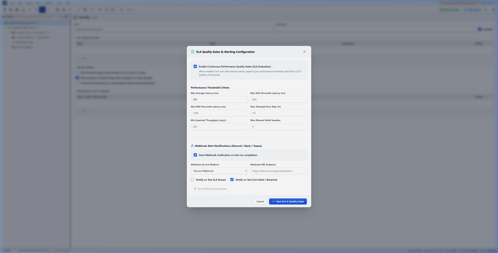
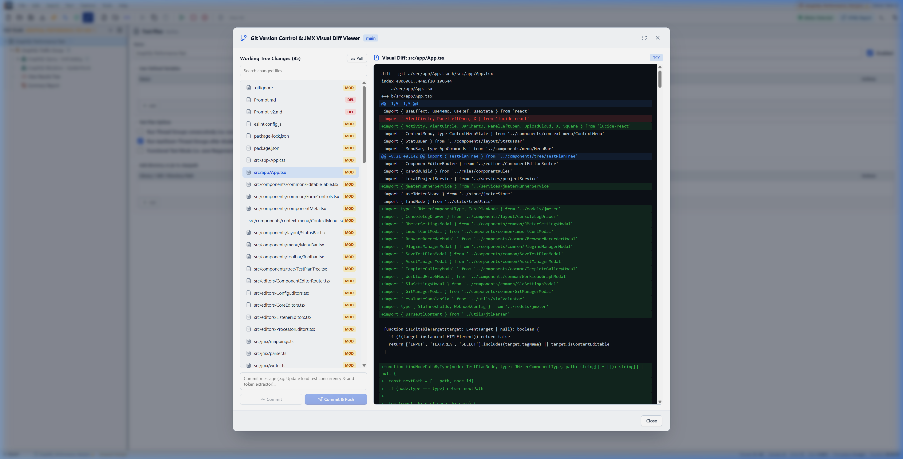
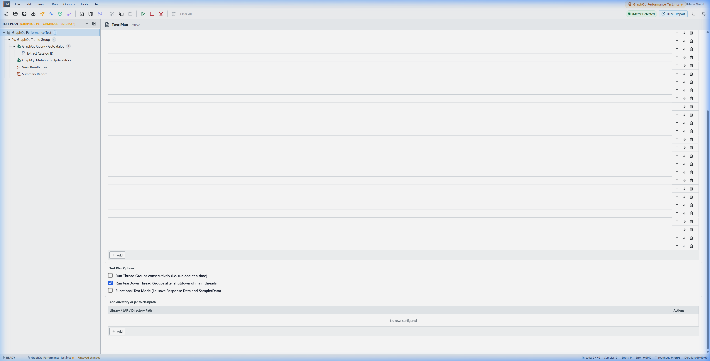
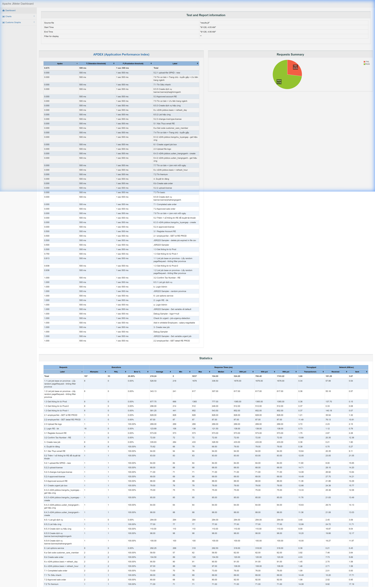

📖 Sổ Tay Hướng Dẫn Sử Dụng JMeter Web UI
🌟 1. Giới thiệu tổng quan & Giao diện chính
JMeter Web UI là ứng dụng web hiện đại, mượt mà được xây dựng trên nền tảng React, TypeScript và Vite, kết nối trực tiếp với Apache JMeter Engine chạy trên máy tính của bạn.

2 Chế độ thực thi linh hoạt
- Real JMeter Execution Mode (Chế độ thật): Hệ thống tự động biên dịch Test Plan thành file XML
.jmxvà khởi chạy tiến trình Java JMeter Non-GUI (jmeter.bat -n -t ...), nạp kết quả và báo cáo HTML thời gian thực. - Mock Simulation Mode (Chế độ mô phỏng): Chạy mô phỏng kiểm thử nhanh không cần môi trường Java, phù hợp để dựng nhanh luồng kịch bản.
Cấu hình & Nhận diện tự động
Bấm vào nút huy hiệu Mode Badge ở góc phải thanh công cụ để mở hộp thoại cài đặt đường dẫn JMeter:

🎨 2. Tiêu chuẩn UI/UX Mới & Luồng Hộp Thoại Tập Trung (Unified Modal System)
Nhằm mang lại trải nghiệm tiện lợi, dễ dùng mà không cần mất thời gian tìm hiểu, toàn bộ hệ thống popup / modal đã được tái thiết kế theo tiêu chuẩn công nghiệp thống nhất:
- Lớp phủ Mờ Cố định (Fixed Overlay): Hộp thoại hiển thị trên lớp phủ mờ (
position: fixed; inset: 0; z-index: 9999; backdrop-filter: blur(5px)). Tuyệt đối không xô đẩy thanh Toolbar, cây Test Plan hay Editor. - Single Active Modal Flow (Không chồng chéo): Mở một modal mới sẽ tự động đóng modal đang mở trước đó. Bấm phím
Escapehoặc click ra ngoài để đóng tức thì. - High-Contrast Light Theme: Chuyển đổi toàn bộ nền đen mờ sang nền trắng sáng với chữ màu xám đen đậm (
#0f172a), nhãn form rõ ràng, đạt chuẩn độ tương phản cao WCAG AAA.
Giao diện Sáng Độ Tương Phản Cao (High-Contrast Light Theme)
Toàn bộ các hộp thoại (SLA Quality Gates, Template Gallery, Git Manager, Workload Graph,...) có nền trắng tinh khiết #ffffff, đường viền mềm #cbd5e1 và chữ đen đậm nét cực kỳ dễ đọc.

Bố cục Master-Detail Song Song (Side-by-Side View)
Đối với các hộp thoại hiển thị danh sách và nội dung chi tiết (như Git Version Control & Visual Diff Viewer):
- Cột bên trái (380px): Danh sách toàn bộ file thay đổi kèm thanh tìm kiếm lọc file tức thì + khung commit ghim cố định ở đáy.
- Cột bên phải (phần còn lại): Khung xem visual diff code với chiều cao tối đa, tô màu cú pháp rõ ràng.
- Click chọn bất kỳ file nào bên trái, diff bên phải cập nhật tức thì mà cả 2 bên đều giữ nguyên kích thước ổn định, không co rúm hay chèn ép nhau.

Kiến trúc Cuộn Độc Lập Cho Editor & Bảng Biến
Khung cấu hình component và các bảng biến dài (như User Defined Variables, HTTP Parameters) được tách biệt luồng cuộn riêng (.editor-scroll). Dù có hàng chục hoặc hàng trăm dòng biến, thanh cuộn hoạt động mượt mà và nút + Add ở đáy bảng luôn luôn tiếp cận được.

🌲 3. Cây kịch bản (Test Plan Tree) & Thao tác kéo thả
Cây kịch bản bên trái quản lý toàn bộ cấu trúc phân cấp chuẩn Apache JMeter:
Menu ngữ cảnh chuột phải (Context Menu)
Click chuột phải vào bất kỳ node nào trên cây để mở menu thao tác phân cấp chuẩn:

Thao tác Kéo & Thả (Drag & Drop)
- Sắp xếp thứ tự: Kéo một component thả lên trên hoặc dưới component khác để đổi vị trí.
- Di chuyển vào container: Kéo Sampler/Timer thả vào bên trong một Thread Group hoặc Controller.
- Kéo thả File từ máy tính: Kéo file
.jmx,.jtl,.csvtừ Windows Explorer thả trực tiếp vào trình duyệt để nạp dữ liệu.

🌐 4. Tính năng Import từ cURL (Tools -> Import from cURL)
Cho phép nhập nhanh bất kỳ yêu cầu API nào từ DevTools của trình duyệt hoặc Postman thành component của JMeter:

Live Preview & Phân giải thời gian thực
Dán câu lệnh cURL vào ô nhập liệu. Hệ thống sẽ tự động phân giải Method, Domain, Path, Headers và Body Data ngay lập tức:

Tự động sinh Sampler & Headers
Bấm Import into Test Plan, hệ thống tự động tạo cặp HTTP Request và HTTP Header Manager:

📊 5. Trình xem kết quả (View Results Tree) chuẩn Apache JMeter
Bộ hiển thị kết quả chi tiết của JMeter được tái hiện đầy đủ với 3 tab trực quan:
Tab Sampler Result
Xem toàn bộ thông số chi tiết: Mã phản hồi, Load time, Connect time, Latency, Data size, Headers size:

Tab Request & Tự động sinh cURL (Chuẩn Postman)
Tự động xuất cú pháp lệnh cURL để bạn có thể sao chép chạy ngay trong Terminal hoặc import vào Postman:

Tab Response data (Giao diện Postman & Tự động giải mã Unicode)
Hỗ trợ JSON Pretty, tìm kiếm nội dung và tự động giải mã toàn bộ ký tự tiếng Việt có dấu chuẩn đẹp:

🌐 6. Trình Ghi Mạng Trình Duyệt & Tự Động Bắt Biến (Auto-Correlation)
Bộ công cụ tự động hóa mạnh mẽ giúp bạn tiết kiệm hàng giờ thao tác thủ công khi dựng kịch bản từ ứng dụng web:
6.1. Browser Network Recorder & Nhập HAR
- Live CDP Recording: Tự động khởi chạy Chrome/Edge tách biệt để ghi lại 100% request và response payload người dùng thao tác.
- Import File HAR: Kéo thả tệp
.harxuất từ bất kỳ trình duyệt nào vào để phân tích. - Bộ lọc thông minh: Tự động loại bỏ ảnh, css, fonts tĩnh; tự động gom header vào Header Manager.
6.2. Thuật toán Tự Động Bắt Biến & Tương Quan (Auto-Correlation Wizard)
Tự động quét chuỗi request/response để phát hiện các token phiên làm việc (Access Token, JWT, CSRF, Session ID). Tự động chèn JSONExtractor ở request trước và thay thế các chuỗi giá trị cứng ở các request sau thành biến động ${access_token}.
🏛️ 7. Tính Năng Doanh Nghiệp & Đảm Bảo Chất Lượng
Thiết lập các tiêu chí chặn kiểm thử CI/CD tự động: Max Average Latency, Max P95 Latency, Max Tolerated Error Rate, Min Throughput. Tích hợp gửi Webhook Rich Embed đến Discord, Slack, MS Teams khi hoàn thành.
Thư Viện Kịch Bản Mẫu Chuẩn Doanh Nghiệp (Enterprise Template Gallery)
Cung cấp 6 blueprint công nghiệp sẵn sàng chạy chỉ với 1 click:
- E-Commerce End-to-End: Luồng Catalog -> Cart -> Checkout kèm CSV Data.
- Microservices REST API: Kiểm thử Smoke/Load kèm UUID sinh bằng Groovy.
- OAuth2 Endurance Soak: Kiểm tra ngâm tải phát hiện Memory Leak.
- Step-Up Concurrency Stress Test: Tăng dần tải theo từng bước tìm điểm quá tải.
- GraphQL API Queries & Mutations: Kịch bản truy vấn GraphQL tham số hóa.
- WebSocket Realtime Messaging: Kiểm thử luồng gửi nhận frame WebSocket bền vững.
Biểu Đồ Đường Cong Tải (Workload Curve & Concurrency Profile)
Tự động tổng hợp và vẽ biểu đồ số người dùng ảo đồng thời (VUs) theo thời gian của toàn bộ các Thread Group trong kịch bản. Giúp bạn nắm bắt chính xác điểm tải cao nhất (Peak Concurrency) trước khi thực thi.
Trình Quản Lý Tài Nguyên (Project Asset Manager)
Quản lý tập trung các tệp CSV, file ảnh/PDF đính kèm (data/, GPKD/). Hệ thống tự động đồng bộ các file này vào thư mục chạy runs/run_XXXX/ của JMeter, đảm bảo không bao giờ bị lỗi thiếu file khi chạy test.
Trình Quản Lý Plugins (JMeter Plugins Manager)
Tương thích hoàn toàn với jmeter-plugins.org, hỗ trợ tìm kiếm, tải và kích hoạt plugin chính thức trực tiếp trên Web UI:

⚡ 8. Thực thi, Giám sát Console & Điều khiển Runner
Khởi chạy & Giám sát Live Console
Bấm nút Play (▶️) hoặc phím tắt Ctrl + R để bắt đầu. Mở Live Console để xem log hệ thống thời gian thực:

Nút Stop (⏹️ ô vuông đỏ) và Shutdown (⏸️) luôn luôn sẵn sàng. Khi cần dọn dẹp tiến trình Java ngầm bị treo, bấm nút Force Stop & Reset màu đỏ để giải phóng hệ thống ngay lập tức.

Báo cáo HTML Dashboard Chính Thức
Sau khi test hoàn tất, nút HTML Report sẽ sáng lên. Click vào để mở báo cáo thống kê chính thức của Apache JMeter:

💻 9. Soạn thảo mã nguồn & Bảng phím tắt
Trình soạn thảo JSON Body & JSR223 Groovy
Tích hợp số dòng code, tô màu cú pháp và nút Prettify JSON tự động căn lề chuẩn đẹp:

Bảng phím tắt thao tác nhanh (Keyboard Shortcuts)
| Phím tắt | Thao tác | Mô tả |
|---|---|---|
Ctrl + N |
New Plan | Tạo kịch bản kiểm thử mới |
Ctrl + O |
Open JMX | Mở file kịch bản .jmx từ máy tính |
Ctrl + S |
Save | Lưu kịch bản vào bộ nhớ trình duyệt |
Ctrl + R |
Start Run | Khởi chạy kịch bản kiểm thử với JMeter |
Ctrl + X / C / V |
Cut / Copy / Paste | Cắt, sao chép và dán node trên cây |
Ctrl + D |
Duplicate | Nhân bản node đang chọn |
Delete |
Remove | Xóa node đang chọn |
F2 |
Rename | Đổi tên node trực tiếp trên cây |
Escape |
Close Modal | Đóng nhanh bất kỳ hộp thoại nào đang mở |